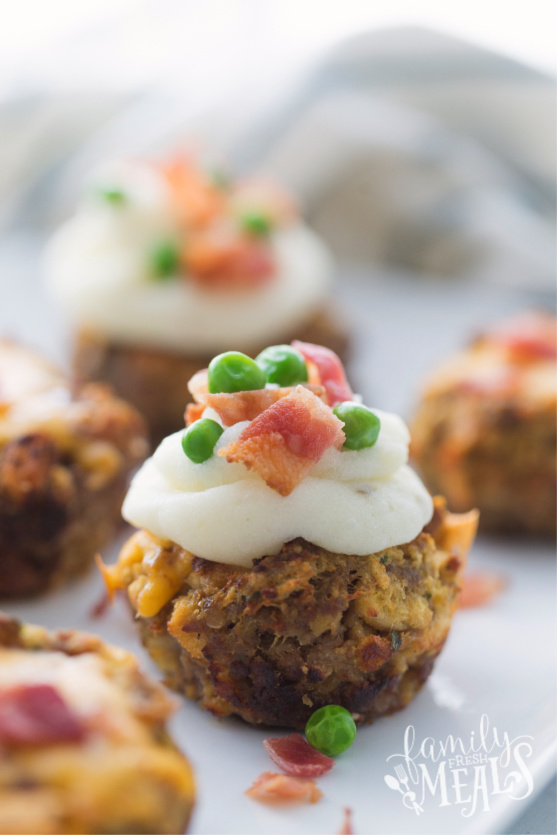

Meatloaf Cupcakes
"Should have just used regular frosting"

Meatloaf Cupcakes: Small meatloafs in the shape of a cupcake
Information
- Cook: 40 minutes
- Total: 1 hour
- Prep: 20 minutes
- Servings: 6
- Yield: 6 loafs
Ingredients
- 1 pound ground beef
- 1 cup crushed saltine crackers
- ½ cup chopped onions
- ½ cup chopped green bell peppers
- ⅓ cup milk
- 1 egg
- 1 tablespoon worcestershire sauce
- 2 cloves chopped garlic
- 1 teaspoon ground black pepper
- 1 teaspoon seasoned salt
- ½ cup ketchup
- ½ cup brown sugar
- 4 cups mashed potatoes
- 1 cup shredded cheddar cheese
Directions
- Preheat oven to 350 degrees F (175 degrees C).
- Mix ground beef, saltine crackers, onion, green bell pepper, milk, egg, Worcestershire sauce, garlic, black pepper, and seasoned salt together in a bowl.
- Stir ketchup and brown sugar together in a bowl. Spoon ketchup mixture into the bottom of each muffin cup of a 6-cup muffin tin.
- Fill muffin cups with beef mixture, leaving 1/2-inch space on the top.
- Bake in the preheated oven until no longer pink in the center, about 30 minutes. An instant-read thermometer inserted into the center should read at least 160 degrees F (70 degrees C). Drain fat from muffin cups.
- Top each 'cupcake' with mashed potatoes and Cheddar cheese.
- Continue baking until cheese is melted, about 10 minutes.
Nutritional Facts
Per Serving: 489 calories; protein 22.7g; carbohydrates 53.7g; fat 20.5g; cholesterol 100mg; sodium 1121.5mg.
Return Home